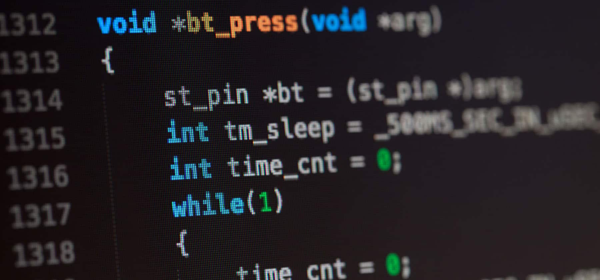

Los lenguajes de programación son esenciales en tecnología
Estos permiten crear software, aplicaciones y sistemas. Hay diferentes tipos debido a sus usos específicos: Lenguajes de Bajo Nivel: Como ensamblador, controlan directamente el hardware. Lenguajes de Alto Nivel: Como Python y Java, son más intuitivos y fáciles de aprender. Lenguajes de Script: Como JavaScript y PHP, se usan para desarrollo web y automatización. Lenguajes Orientados a Objetos: Como C++ y Java, organizan el código en objetos. Lenguajes Funcionales: Como Haskell, se enfocan en funciones matemáticas.
